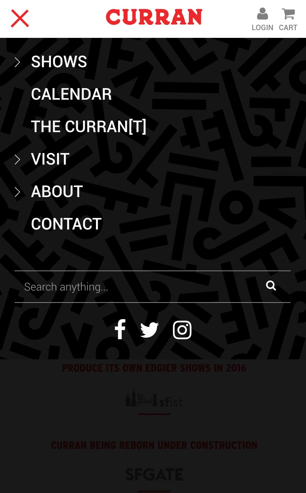

The Curran theatre has housed some of the biggest productions in theatre history. Today, almost a century after it first opened in the Bay area, the theatre is set to reopen after major restoration and renovation.
The theatre needed a website to accompany their much awaited reopening and I was lucky enough to be part of the design and development team at Teak, the creative studio who was awarded this task, as part of my summer internship.
Please visit the Curran website.
Platform: ProcessWire
Languages: HTML5, CSS3, PHP and Javascript
Plugins/Libraries: jQuery, Magnific Popup, Slick Carousel, and CLNDR
I was very lucky to have worked with a great web development team at Teak. John Evanofski and Evan Hashi were great mentors.
During the early stages of this project, I dabbled in UX and wireframing with the design team using Sketch and Illustrator, particularly the mobile navigation menu.
When there was a set design in place, I quickly moved on to building the website with the web dev team. I mostly did styling. I was also assigned to build the minor pages, which included the About and Visit pages, as well as the footer.